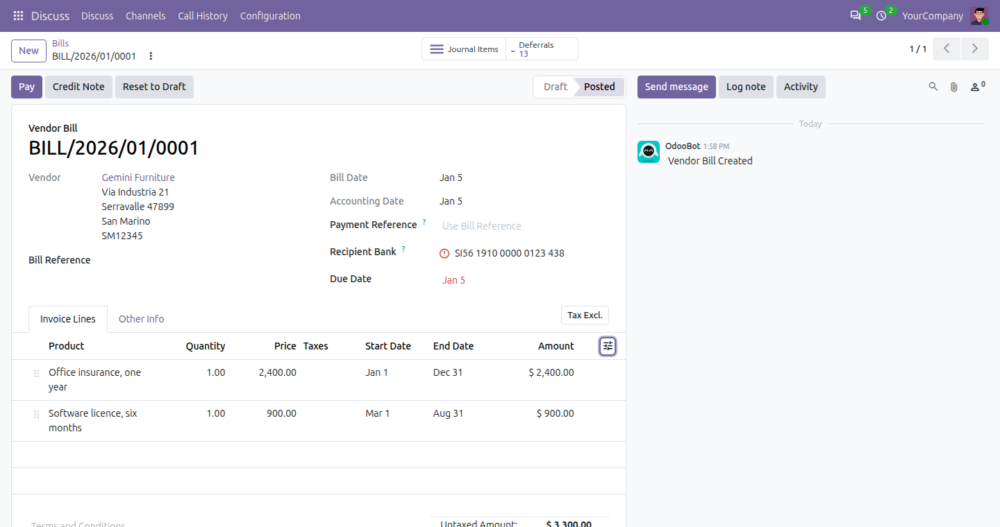
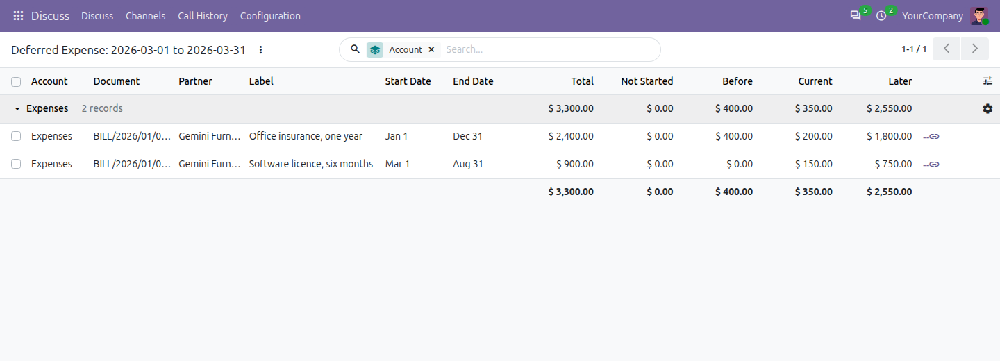
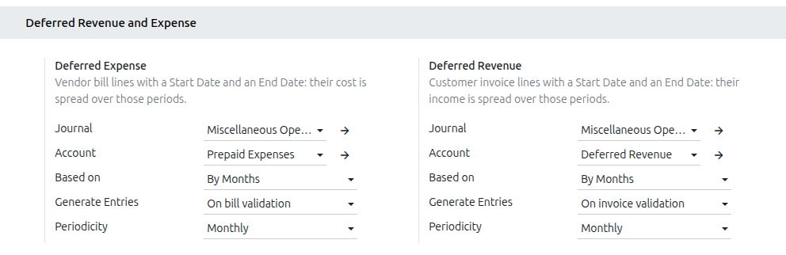

100% FreeOpen source · LGPL-3Odoo 20 Community & Enterprise
Deferred Revenue and Expense
Recognise what you invoice and what you pay in the periods it belongs to: yearly insurance, rent paid in advance, annual support contracts, subscriptions.
Put a Start Date and an End Date on the line, and the entries are made for you.

A bill with two deferred lines: the Deferrals button opens the entries they made.
What it doesFrom the invoice line, without an asset for every prepayment
The account of the line tells which side it is: a cost is a deferred expense, an income a deferred revenue.
📅
Start and End Date on the line
Two optional columns on customer invoices and vendor bills. Only income and expense lines are deferred.➜
On validation
Posting the document moves the amount to the deferred account, then one entry per period brings back its share.☰
Manually & Grouped
Or one entry per period for all the deferred lines, generated from the report and reversed the next day.∑
Three ways to split
By months (every month 30 days), by days, or by full months. The last period takes the rounding, to the cent.📅
Monthly or yearly
An entry at the end of each month, or of each fiscal year, for each side on its own.📊
Deferred reports
Deferred Revenue and Deferred Expense: total, not started, before, current and later, per account, printable.
ReportsWhat is deferred, period by period
Choose a period: each deferred line shows its total, what is not started yet, and what is recognised before the period, in it and after it.

The Deferred Expense report for March, grouped by account.
How to use itThree steps
1. In Accounting > Configuration > Settings, set the journal, the deferred account, the computation, how the entries are generated and the periodicity, for expenses and for revenue.
2. Show the Start Date and End Date columns of the invoice lines and fill them in on the lines to defer.
3. Post the document. With Manually & Grouped, open the Deferred Revenue or Deferred Expense report at the end of the period and click Generate Entries.

The settings: each side with its journal, account, computation, generation and periodicity.
Good to knowThe details that matter
✓ The same entries as Odoo Enterprise: compared with it on 87 cases (each computation, monthly and yearly, odd dates), to the cent.
✓ A service in a later month than its bill is deferred too, even when it fits in a single month.
✓ The entries of past dates are posted at once; the others post themselves on their date.
✓ Resetting the document to draft reverses its posted deferral entries and deletes the others; a credit note defers the other way round.
✓ The analytic distribution of a line is carried to its deferral entries.
✓ It only depends on the Invoicing app: it works on Odoo 20 Community and Enterprise alike, with or without the other accounting modules.